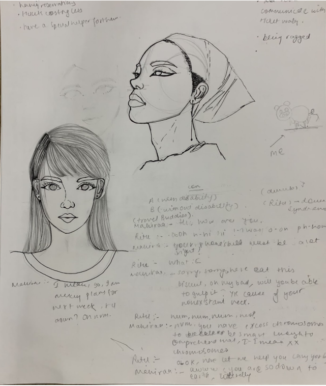
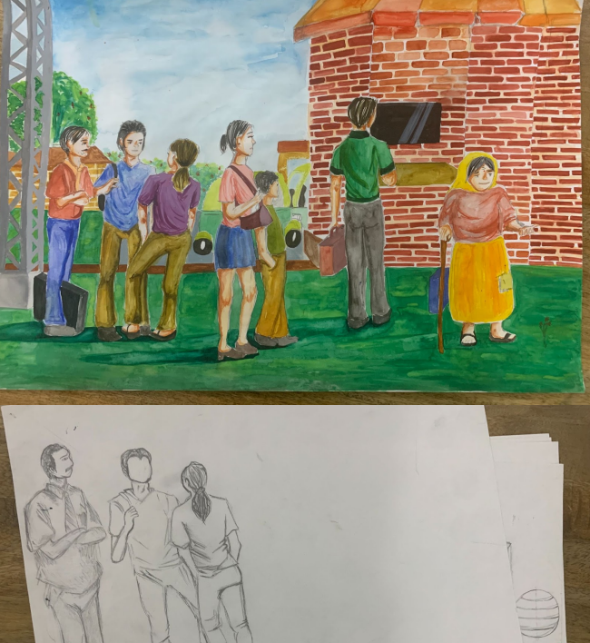
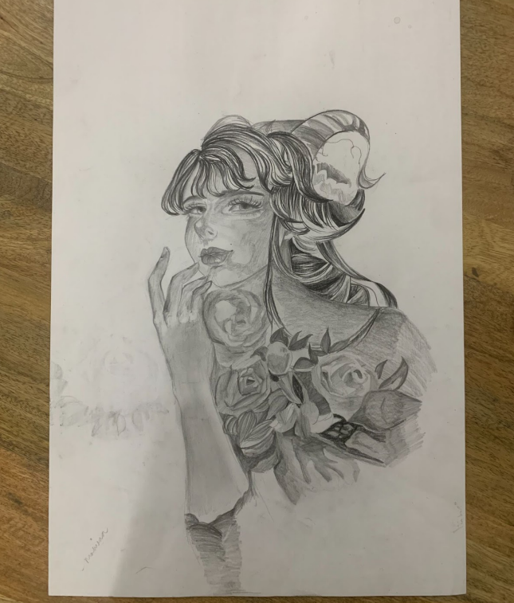
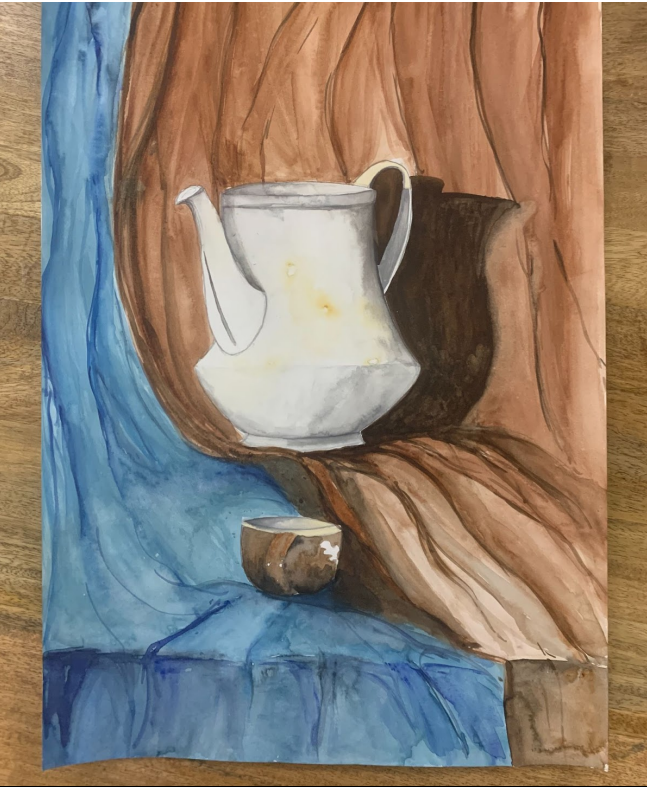
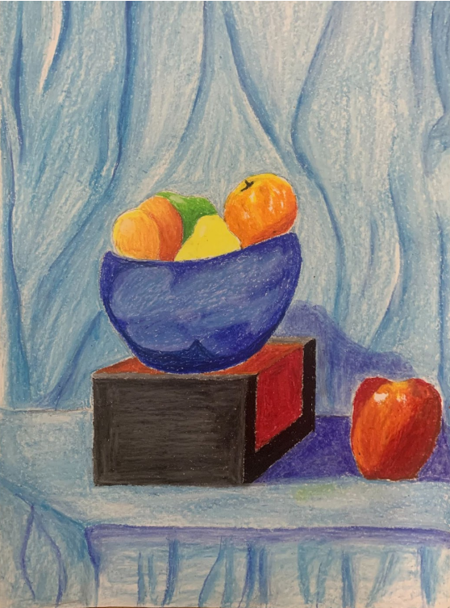
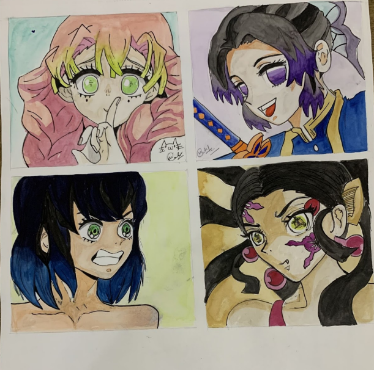
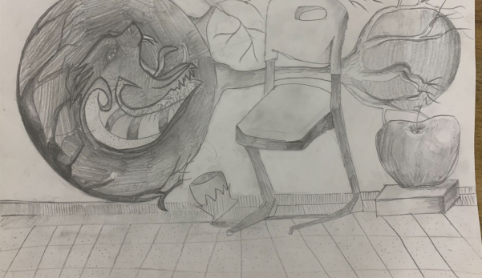
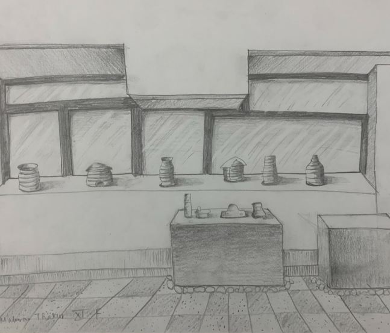

Hi,
I'am Mahiraa!
About

Hi There!
I am Mahiraa! Everday things intrigue me. You will probably find me obsessing over winsome things or trying to draw something while contemplating my existence.
Certificates

ArtWork
Canvas art! View of a flower pot with pastel flowers.
Morning scribbles with a micron.

I love my school.This is my school building and the gardener in the happy field trying to water the bushes that keep getting dehydrated in hours!

Paris! Calm and peaceful. Mittens the kitten is sitting and examining, probably introspecting
A busy scene on another humid day
An incomplete shading piece

3-D Shapes.The sphere reminds me of the sun's core.The sun's core generates my favourite particles, Solar Neutrinos!
A jar of water

My first ever painting of a cermaic vase and an apple.
Oil pastels

A purple bottle and a hibsicous with a box filled with marbles.
Demon Slayer: Kimetsu no Yaiba is a Japanese manga series written and illustrated by Koyoharu Gotouge.

The Colosseum
Drago

Consert

Palampur

Comic Strip

Cosmic

befuddled

Houses
Shadows
My Journey
~26th January 2019
I opened my eyes which had bonded together after a long sleep, I sat up right in the middle of an inky dark chilly night, everything was tranquil and the moon’s white light came through the firm glass of my windows and fell on my face. It gave me a relaxing feeling, like I could touch and feel the light. I kept my leg on the glacial floor of my room. I started walking and I could only hear the ticking of clock, like I could feel every moment, every second pass. This was the first time I was feeling life, it was slow and peaceful. My legs were paining a bit, it felt like I hadn’t walked in days though it had just been a few hours. It’s like something was stopping me, I knew it was my cold soul, but I could feel energy around me.I sat down on my bed wondering If I should get something from the refrigerator, I was starving but too lethargic to get anything, it’s like, my body sort of got heavy all of a sudden or I got too weak to handle it. In seconds of me debating with myself I heard a voice, I couldn’t recognize what is was of, but felt like footsteps on the stubborn ,freezing floor of the toxic winter. All of sudden I remembered the news that came out last month about a dwelling spirit and a lot of cases associated with it.For a moment I got a spine chill, I couldn’t feel the cold atmosphere, I gulped, but it felt like there was a lump in my through that wouldn’t go down. My fingers started to shake as my body shivered and my heart started thumping loud like I could here it in this silent night. In the morning loud knock on the door woke me up, I walked sluggishly to open it.Though I was still confused of what has happened last night and how I suddenly slept, but avoiding these thoughts, I opened the door to find Amy ,my friend who I have known my whole life. She walked in and had a beam on her face, she was talking to me, but I had no idea what she was saying, I just woke up and my head was still spinning and I was absolutely bewildered of what in the world is going on. I went to the kitchen to get a cup of coffee so I am wide awake for this really unpredictable day. Just when I came out of the kitchen taking a sip of my really warm black coffee in this icy-cold morning, Amy said that she really liked talking to my sister. I was absolutely confused as I did not have any sibling. Suddenly I had a really frightening thought that creeped me out for a minute. The warm cup of coffee fell on the glossy wooden floor. I remembered the voice that struck me last night. My eyes were almost popping out of my head as I got really petrified of what I just heard standing still like a marble statue while the wintry wind though the right window swayed those purple curtains and further my skin hair which stood up in freak making me chillier than ever.
--25 Febrary,2022--
The door creaked as I opened it to go outside. The kind of creak which a door makes when it hasn’t been used frequently. As I stepped one foot outside the house, I looked down on a sudden realization that this moment hadn’t taken place in forever, if not?!, definitely felt like it. It had been 2 years already. I kept another foot out and then another, I started walking. Still looking down like I hadn’t felt this kind of feeling of walking on a road beneath my shoe soul in my whole life, that’s what it literally felt like. Every step I took reminded me of how much I missed here outside. I heard an unfamiliar voice, I turned right to see a swing swinging on its own in the cold wind which further gently touched face and welcomed me outside also making my scarf flow with it. This swing sound I hadn’t heard in months but felt like decades and beyond. I sat down on the chilly bench beside which was rather not visible seconds ago because of the fog which covered everything like it was protecting it like a child in his mother’s benign arms. As I sat down, I got lost in my quiet introspection. I wondered “what was all of this? “I changed my perspective a bit, though the quarantine was over, but most of the learning is still on computer”. Maybe the virus led us to a new world of technology, it showed us new possibilities, leading us to thoughts like “because of technology, this is possible hence it’s better this way”. Some things of technology we had never explored, we did, but now after exploration, we have a new path. Though the pandemic ended, the mindsets of people are still alive. Probably everyone got so used to all this, in fact, now they find it better, when everything can be done from home, school, official work, mostly everything, the only difference now everyone is still at home but without an invisible trap around their house which was earlier. Why is no one except me outside their house, why just me? probably everyone forgot what life was like earlier, way before. There is a good way of looking at it, now people have more leisure time and better family spend, but I miss the life before. Can it come back? Is this change good or bad? Till I get the answers to these questions, I will just keep telling myself,“you may not always have a comfortable life and you will not always be able to solve the world’s problems at once, but don’t underestimate the importance you have because history has shown us that courage is contagious and hope can take on a life of it’s own.